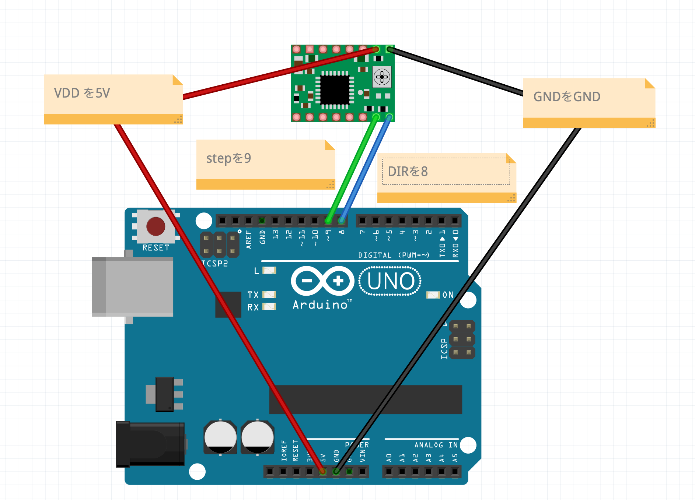

第二回デザイン演習Ⅲ・Ⅳのまとめ
今回の授業では「モーター」をテーマに授業が進められた。
Arudinoでモーターを動かす
↓モーターを動かしながら行き着いたソースコード
- const int DIR = 8;
- const int STEP = 9;
- void setup() {
- pinMode(DIR, OUTPUT);
- pinMode(STEP, OUTPUT);
- digitalWrite(DIR, LOW);
- digitalWrite(STEP, LOW);
- Serial.begin(9600);
- pinMode(13,OUTPUT);
- }
- void clockwise(int delaytime){
- digitalWrite(DIR, HIGH);//HIGHは時計回り
- digitalWrite(STEP, HIGH);
- delayMicroseconds(delaytime);
- digitalWrite(STEP, LOW);
- delayMicroseconds(delaytime);
- }
- void counter_clockwise(int delaytime){
- digitalWrite(DIR, LOW);//はLOWは反時計回り
- digitalWrite(STEP, HIGH);
- delayMicroseconds(delaytime);
- digitalWrite(STEP, LOW);
- delayMicroseconds(delaytime);
- }
- void loop() {
- int interval=0;
- int val=0;
- val=analogRead(1);
- Serial.println(val);
- if(val<200){
- digitalWrite(8,LOW);
- for (int i=0; i <= 50; i++){
- clockwise(600);}
- }
- else{
- digitalWrite(8,HIGH);
- for (int i=0; i <= 50; i++){
- counter_clockwise(600);}
- digitalWrite(13,HIGH);
- delay(50);
- digitalWrite(13,LOW);
- delay(50);
- }
- }
-

↓ソースコードがする動きを納めただけの動画
ソースコードがする動きの動画
assignment2
HMWの画像が見当たらないため後日追記予定。